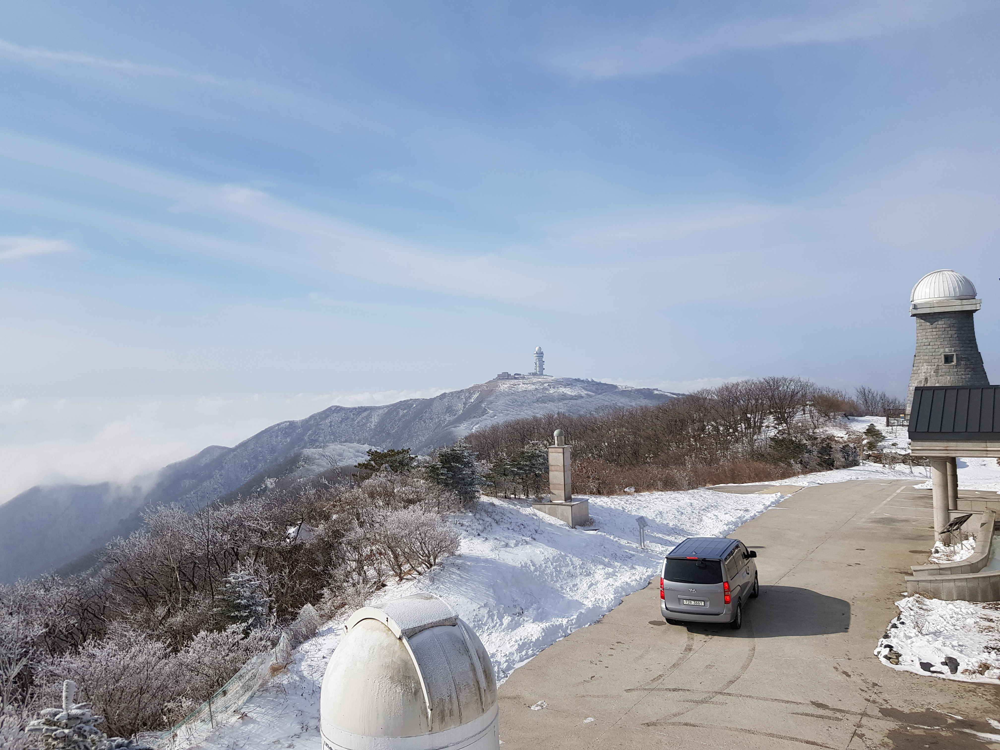
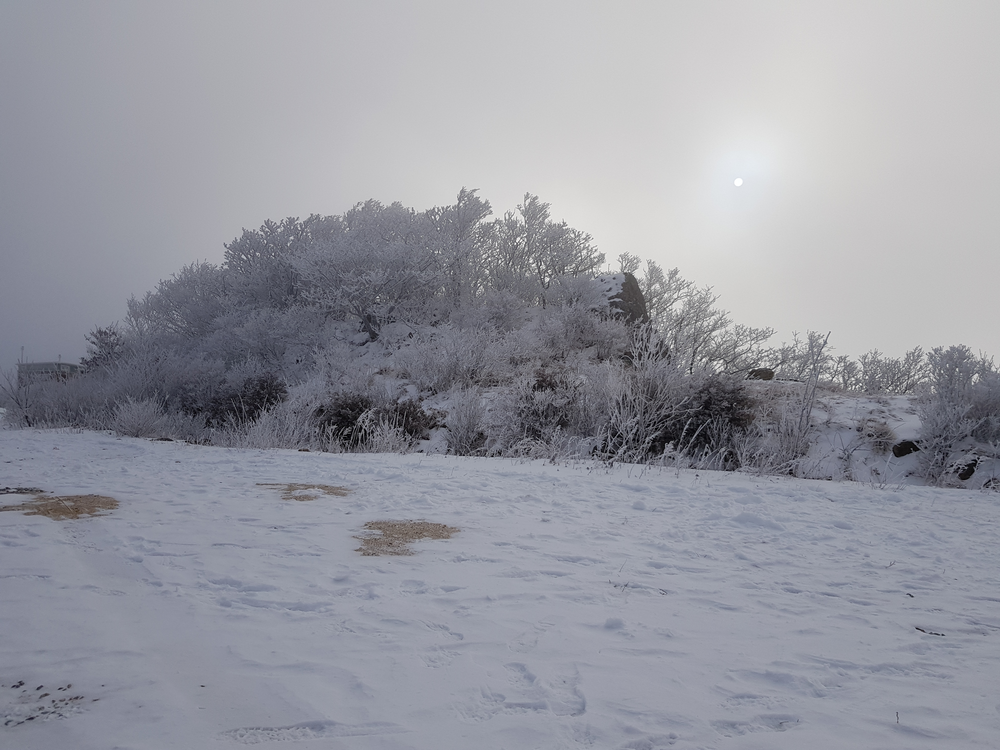

2022 소백산천문대 대학생 겨울학교
성언창 천문대 대장님과 함께하는 Long-slit Spectroscopy 수업
천문대 시설을 이용하면서 천문대 숙소에서 쟈보기도 하고 천문대 밥도 먹고 라면 먹고 술도 먹어보고 ㅋㅋㅋ 눈썰매도 타고 시설을 즐길만큼 즐겼다. 사실 진도는 너무 빨라서 내용으로 얻은 지식이 많지는 않지만 비슷한 나이데의 천문학과 학부생들과 놀면서 친해지는 경험이 너무 좋았다. 천문대에서의 캠프, MT랄까 ... 재미있었다. 노는 것도 먹는 것도 수업 듣는 것도 그러나 진도도 빨랐다.
#1. 공식 단체 사진


공식 단체사진이다. 고도 문제인지 천문학 국룰 사진인 위에서 아래보기 단체사진을 못 찍은 듯 하다.
#2. 정상 풍경 사진



소백산 정상에서 캠프하면서 눈이 왔었다. 얼어죽을번 했지만 어쨋든 아름다운 풍경을 볼 수 있었다.
#3. 추억 사진
또 한명의 한국 천문학계의 미래인 장지훈 군과 함께 찍은 사진

한국 천문학계의 미래 대환장 천문 19 판타스틱 4의 단체사진, 성언창 대장님께서 찍어주셨다. 화질 용량도 크고 각도 넓다. 웅장하다.